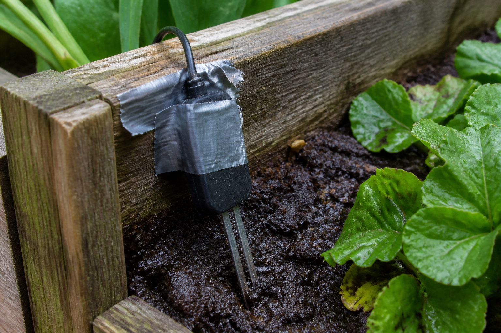

🎯 Ta mission : choisir, parmi les cinq moyens de l'atelier, celui qui fabriquera le support de la sonde tel qu'il est dessiné — pour les 4 bacs comme pour 30 supports.
🖥️ Ordinateur partagé (salle de techno, CDI) : un autre élève qui ouvre cette page sur la même session verra tes réponses.
Quand tu as fini : imprime en PDF si tu veux garder une trace, puis clique sur « 🗑 Effacer ma sauvegarde ».
| Code | Formulation officielle (programme 2024) | Où, dans cette séquence |
|---|---|---|
| 4e_C7.7 | Choisir les moyens et produire la forme voulue. | Activités 1 à 3 et REFAIRE |
| 4e_C4.3 (appui) | Mettre en relation la forme d’une pièce avec le procédé de réalisation. | Activités 0 et 2, et synthèse |
Référence normative : programme de technologie du cycle 4, BO n°9 du 29 février 2024. Codification opérationnelle : les codes 4e_C4.3 · 4e_C7.7 servent à ranger les séquences ; ils ne viennent pas du programme officiel.
Pour toi, sans note : coche ce qui est déjà en place. Sous chaque ligne, un lien pour le reprendre si tu n'en es pas sûr·e.
→ pas encore sûr·e ? relis « Par quoi commence une pièce en 3D ? » dans la synthèse 5e_C7.6
→ pas encore sûr·e ? relis « Comment emporter ton dé jusqu'à l'imprimante ? » dans la synthèse 5e_C7.6
→ pas encore sûr·e ? relis « Comment reconnaître de quoi un objet est fait ? » dans la synthèse 5e_C7.3
Dans cette séquence : il faut produire la pièce. Entre le dessin et la pièce, il y a une machine — qui a ses limites, et qui ne les annonce pas. Un dessin parfaitement juste peut être infabricable ici, ou sortir différent de ce qu'on a demandé.
Un mot à garder en tête : un moyen de fabrication a un domaine, pas une qualité — hors de son domaine, il ne fait pas « moins bien », il ne fait pas.
Le jardin connecté fonctionne. La sonde d'humidité, elle, tient encore avec du ruban adhésif : elle glisse au fond du bac, la mesure part en vrille, et l'arrosage se déclenche n'importe quand.
Le bureau d'études du club a dessiné le support : une plaque de 60 × 40 mm, 3 mm d'épaisseur, avec une fente de 20 × 3 mm où le méplat (sa partie aplatie) de la sonde vient se loger, et deux perçages Ø 4 mm (deux trous de 4 mm de diamètre) pour les vis. Le dessin est fini, coté (toutes ses dimensions sont écrites), validé.
Reste à le fabriquer. L'atelier du collège a cinq moyens. Trois ne savent pas produire cette pièce — et pas pour la raison qu'on croit. Les deux qui restent la produisent différemment l'un de l'autre.

Le dessin est validé. Comment savoir, avant de lancer la machine, si elle rendra bien la pièce qu'on a dessinée ?
On la reprendra au bilan. Personne ne la corrige : elle sert à mesurer le chemin parcouru.
La découpe laser ne reçoit jamais de PVC. Chauffé, il dégage du chlorure d'hydrogène : il brûle les voies respiratoires et corrode la machine de l'intérieur. Le PMMA de ce support, lui, se découpe très bien. On ne regarde pas le faisceau, le capot reste fermé, et l'extraction tourne pendant toute la découpe et une minute après.
La fraiseuse ne tourne jamais sur une pièce tenue à la main. Pièce bridée, lunettes, cheveux attachés, manches remontées, aucun gant — un gant happé entraîne la main. Les copeaux se retirent à la brosse une fois la broche arrêtée, jamais aux doigts ni à l'air comprimé.
Côté électricité, rien ne change : la sonde et la station du jardin sont alimentées en très basse tension. Aucune activité de cette séquence ne fait manipuler le secteur par un élève.
Une question par ligne du bloc « Avant de commencer ». Elles ne sont pas notées et ne comptent pas dans ta progression : elles te disent quoi relire avant de te lancer. « Je ne sais pas encore » est une réponse utile.
Question directrice : avant de lancer une machine, comment savoir si elle sait produire la pièce qu'on a dessinée ?
Au programme : l'ouverture, puis ce que chaque moyen ne sait pas faire (activité 0, environ 15 min), et l'atelier qui trie et dit pourquoi (activité 1, environ 25 min).
Un moyen de fabrication n'a pas de qualité : il a un domaine. Hors de son domaine, il ne fait pas « moins bien » — il ne fait pas, ou il fait autre chose. Avant de choisir, il faut savoir ce que chacun ne sait pas faire.
Associe chaque moyen à ce qui lui est impossible.
Les réponses possibles — choisis une lettre pour chaque ligne :
La découpe laser — un trou qui ne traverse pas, ni le moindre relief
La fraiseuse numérique — un angle interne plus serré que le rayon de sa fraise
Le thermoformage — un perçage, ni une forme qui bloquerait au démoulage
Le sciage à la main — une fente étroite, ni une cote au dixième de millimètre
Aucune de ces quatre lignes n'est un défaut. Ce sont des conséquences directes de la façon dont la machine travaille : un faisceau laser traverse ou ne traverse pas, il ne s'arrête pas à mi-épaisseur ; une fraise est ronde, donc elle laisse un angle rond ; une pièce thermoformée doit sortir de son moule.
C'est pour cela qu'on ne classe pas les moyens du meilleur au pire. On ne dit pas « la fraiseuse est moins bonne que le laser » : on dit « cette forme-ci a un angle interne vif, donc la fraiseuse ne la rendra pas telle quelle ». Le domaine se lit avant, la question de la qualité ne se pose même pas.
Voici l'atelier, chargé du dessin du support : 3 mm de paroi, une tolérance de 0,3 mm sur la fente, deux perçages traversants, et du PMMA. Clique sur 🏭 Lancer l'atelier et lis la colonne « Verdict ».
L'atelier du collège : cinq moyens, un dessin. L'atelier ne classe pas les moyens du meilleur au pire — il dit lesquels savent produire CETTE forme-là, et ce que chacun en fera.
La forme est donnée : elle sort de la modélisation. Tu ne la modifies pas — tu choisis par quel moyen la produire.
| Ce que le dessin demande | Valeur | Pourquoi | |
|---|---|---|---|
| · | Paroi de 3 mm | 3,0 mm | la plaque tient la sonde sans fléchir quand la terre pousse |
| · | Tolérance de 0,3 mm sur la fente | 0,3 mm | trop large, la sonde bouge ; trop étroite, elle n'entre pas |
| · | Deux perçages traversants Ø 4 mm | oui | deux vis M4 traversent la paroi du bac et serrent le support |
| Moyen | Temps machine | Ce qu'il fera de ton dessin | Verdict |
|---|
Associe chaque moyen écarté au motif exact de son élimination.
Les réponses possibles — choisis une lettre pour chaque ligne :
🔒 Clique d'abord sur « 🏭 Lancer l'atelier » : on ne commente pas un tri qu'on n'a pas fait.
L'impression 3D — elle n'accepte pas le PMMA : elle imprime du PLA, du PETG ou du PP
Le sciage à la main — sa tolérance de 1 mm est plus de trois fois trop grande pour la fente
Le thermoformage — sa tolérance est trop grande, et il ne sait pas percer les deux trous
1. La matière se lit avant tout le reste. Un moyen qui n'accepte pas la matière du cahier des charges est écarté sans qu'on ait besoin de regarder une seule de ses performances — et l'impression 3D, qui sait tout faire par ailleurs, n'imprime pas le PMMA. Un domaine n'est pas une note : c'est une liste de conditions, et il suffit qu'une seule manque.
2. Le sciage n'arrive jamais à la question du temps. Sa tolérance courante est de 1 mm quand la fente en demande 0,3 : la sonde aurait du jeu, ou n'entrerait pas. L'ordre compte — on élimine d'abord sur ce que le moyen sait faire, on compare ensuite les temps de ceux qui restent. Comparer les temps de moyens incapables de produire la pièce, c'est comparer des choses qui n'existent pas.
Il reste deux moyens : la découpe laser et la fraiseuse numérique. C'est maintenant que la séance commence vraiment.
Question directrice : deux moyens savent produire le support : rendent-ils la même pièce, et à temps ?
Au programme : le même dessin, deux pièces différentes (activité 2, environ 25 min), quatre pièces ou trente (activité 3, environ 15 min), le réinvestissement pour le collège voisin (environ 15 min), puis la synthèse, le Bonus, le bilan et le renvoi vers le QCM.
⚠️ À l'atelier : jamais de PVC à la découpe laser, capot fermé ; à la fraiseuse, pièce bridée, lunettes, cheveux attachés, aucun gant. L'encadré complet est dans le rappel, en haut de page.
Deux moyens savent produire le support. On pourrait croire qu'ils donnent la même pièce : c'est le même fichier. Ils ne donnent pas la même pièce.
Relis la colonne « Ce qu'il fera de ton dessin » pour les deux moyens retenus, et remplis le tableau. La fente est dessinée à 20 × 3 mm, pour un méplat de sonde de 20 × 3 mm.
↑ Remonte à l'atelier — c'est le même, et il a gardé ton dessin. Une page ne porte qu'un seul atelier : deux exemplaires, ce seraient deux instruments qui répondent au même nom.
| Ce que tu relèves dans la colonne « Ce qu'il fera de ton dessin » | Ta valeur |
|---|---|
| Largeur réelle de la fente sortie de la découpe laser | |
| Longueur droite utile de la fente sortie de la fraiseuse |
| Ce que tu relèves dans la colonne « Ce qu'il fera de ton dessin » | Ta valeur |
|---|---|
| Largeur réelle de la fente sortie de la découpe laser | 3,2 mm |
| Longueur droite utile de la fente sortie de la fraiseuse | 17 mm |
1. La fraise fait 3 mm de diamètre. Elle creuse une fente de 3 mm de large — et ses deux extrémités sont des demi-cercles de 1,5 mm de rayon. La longueur droite disponible n'est donc plus 20 mm mais 20 − 3 = 17 mm. Le méplat de 20 mm bute sur les arrondis.
2. Non, et c'est le cœur de la séance. Une fraise est un cylindre : elle ne peut laisser derrière elle qu'une trace ronde. Lui demander un angle vif, c'est lui demander de ne pas être elle-même. Le laser, lui, fait des angles parfaitement vifs — parce qu'un faisceau n'a pas de rayon. Deux machines, deux géométries, deux pièces.
3. On dessine des dégagements d'angle : deux petits perçages ou deux losanges aux extrémités de la fente, qui repoussent la matière hors du chemin du méplat. La longueur droite redevient 20 mm. C'est une correction qui ajoute quelque chose au dessin sans rien changer à la fonction — la sonde tient toujours pareil.
Et le laser, lui, n'est pas exact non plus. Son faisceau brûle un trait de 0,2 mm de large : une fente dessinée à 3,00 mm sort à 3,20 mm. Ici c'est sans conséquence — la tolérance admise est de 0,3 mm — mais si l'on voulait exactement 3,00, il faudrait dessiner 2,80. Aucun moyen ne rend le dessin. Chacun y met son accent, et il faut le connaître.
Les deux moyens savent produire le support. Reste une question que le dessin ne pose pas : combien en faut-il ? L'atelier du collège dispose de 3 h de machine avant la date. Passe la quantité de 4 à 30 et regarde la colonne des temps.
↑ Remonte à l'atelier — c'est le même, et il a gardé ton dessin. Une page ne porte qu'un seul atelier : deux exemplaires, ce seraient deux instruments qui répondent au même nom.
3. Écris en deux phrases le moyen que tu retiens pour les 4 bacs, celui que tu retiendrais pour 30 supports, et ce qui a fait changer la réponse.
Le niveau attendu est le même : ces phrases donnent le départ, pas la réponse.
🔒 Change d'abord la quantité sur l'atelier (le menu « Nombre de pièces à produire ») : c'est ce geste-là que l'activité te demande de commenter.
1. Oui, largement : 18 min au laser — soit 10 de préparation plus 4 × 2 — et 1 h 13 à la fraiseuse, soit 25 plus 4 × 12. Pour quatre pièces, la quantité ne décide rien — on peut choisir sur autre chose, par exemple sur la géométrie de la fente.
2. Tout change. Le laser passe à 1 h 10, la fraiseuse à 6 h 25 : elle sort des 3 h disponibles. Elle n'est pas devenue incapable de produire la pièce — elle en est toujours capable, et elle ne le fera pas à temps. Ce sont deux questions différentes, et l'atelier les affiche sur deux jauges séparées.
La raison tient à la structure du temps : chaque moyen coûte une préparation payée une fois, et un temps par pièce payé à chaque exemplaire. Le laser prépare en 10 min et produit en 2 ; la fraiseuse prépare en 25 et produit en 12. Plus la série est longue, plus c'est le temps par pièce qui commande — et l'écart se creuse.
3. Les deux réponses se défendent, à condition de dire ce qui a changé. Pour 4 supports, la fraiseuse est défendable si l'on préfère sa précision, à condition d'avoir dessiné les dégagements d'angle. Pour 30, le laser s'impose : ce n'est plus un choix de goût, c'est le seul qui tienne le délai.
La quantité n'est pas une question d'intendance. C'est un critère de choix du moyen, au même titre que l'épaisseur minimale — et il n'apparaît nulle part sur le dessin.
Le collège voisin veut les mêmes supports pour son jardin. Il n'a pas de découpeuse laser : son atelier compte une fraiseuse numérique et une imprimante 3D, rien d'autre. Le dessin, lui, est le même.
Écris : quel moyen reste possible, ce qu'il faut changer — au dessin ou à la matière — et ce que ce changement coûte.
Le niveau attendu est le même : ces phrases donnent le départ, pas la réponse.
Deux chemins, et ils ne coûtent pas la même chose.
Garder le PMMA et fraiser. C'est le chemin court : on ajoute au dessin les dégagements d'angle aux extrémités de la fente, et la fraiseuse rend une pièce utilisable. Rien d'autre ne bouge — ni la matière, ni les cotes extérieures, ni les perçages. Le coût est un temps de dessin, et il est faible.
Changer de matière et imprimer. En PETG ou en PLA, l'impression 3D redevient
possible. Mais elle demande 40 min par pièce : 2 h 55 pour quatre supports, contre
1 h 13 à la fraiseuse. Et le PLA se déforme dès 55 °C — dans un bac au soleil, ce serait un
mauvais choix, comme le disait déjà 4e_C7.3.
Le premier chemin est le bon, et la raison mérite d'être dite : on a changé le dessin, pas le cahier des charges. La sonde tient toujours à 12 cm de profondeur, dans la même matière, avec les mêmes vis. Modifier un dessin pour qu'une machine sache le produire n'est pas un renoncement — c'est le travail normal de celui qui conçoit en sachant qui fabriquera.
C'est exactement ce que tu feras en 3e, en plus difficile : là, ce sera à toi de trouver quelles cotes corriger, et lesquelles surtout ne pas toucher.
Sur l'atelier, cherche à partir de combien de supports la découpe laser devient indispensable — c'est-à-dire la première quantité pour laquelle la fraiseuse dépasse les 3 h. Le calcul tient en une ligne : 25 + 12 × n ≤ 180.
Puis pose la question que personne n'a posée : ces 3 h, d'où viennent-elles ? Une contrainte de temps machine n'est pas une loi de la physique — c'est un emploi du temps, et un emploi du temps se négocie. Écris en une phrase à qui tu irais le demander.
Le niveau attendu est le même : ces phrases donnent le départ, pas la réponse.
Le calcul. La fraiseuse tient le délai tant que 25 + 12 × n ≤ 180, c'est-à-dire tant que 12 × n ≤ 155, soit n ≤ 12,9. Pour 12 supports : 25 + 12 × 12 = 169 min, soit 2 h 49 — elle tient. Pour 13 supports : 25 + 12 × 13 = 181 min, soit 3 h 01 — elle dépasse d'une minute. À partir de 13 supports, la découpe laser devient indispensable ; pour ces 13 pièces, elle demande 10 + 2 × 13 = 36 min.
D'où viennent les 3 h ? D'un emploi du temps : les machines de l'atelier servent aussi à d'autres classes, et quelqu'un a réservé ce temps pour le projet, avant une date. Ce n'est pas une loi de la physique : on peut demander un créneau de plus, ou une date plus tardive. Une phrase qui convient : « j'irais demander au professeur qui tient le planning des machines de l'atelier s'il reste un créneau — et, si c'est la date qui coince, à la personne qui l'a fixée ».
Attendus : l'inégalité résolue (n ≤ 12,9) ; la première quantité qui dépasse, 13 ; la vérification à 12 et à 13 supports ; une personne désignée par ce qu'elle décide, et ce qu'on lui demande.
Erreurs typiques : répondre 12 — c'est la dernière quantité qui tient, pas la première qui dépasse ; oublier la préparation de la fraiseuse et calculer 180 ÷ 12 = 15 ; arrondir 12,9 à 13 sans vérifier ; croire qu'un temps machine ne se discute jamais.
🔙 Ton idée de départ : —
Compare : ta réponse de départ parlait-elle de ce que la machine ferait du dessin ?
Le niveau attendu est le même : ces phrases donnent le départ, pas la réponse.
Comment j'ai travaillé :
Le niveau attendu est le même : ces phrases donnent le départ, pas la réponse.
Les quatre niveaux sont ceux du livret scolaire :
maîtrise insuffisante · maîtrise fragile · maîtrise satisfaisante · très bonne maîtrise.
Aucun n'est une note : choisis celui qui décrit ce que tu fais aujourd'hui.
30 questions sur les domaines des moyens, ce que chacun fait du dessin et le rôle de la quantité. 20 portent sur le choix des moyens, 10 sur le lien entre la forme d'une pièce et son procédé de réalisation.
🚀 Ouvrir le QCM d'entraînement